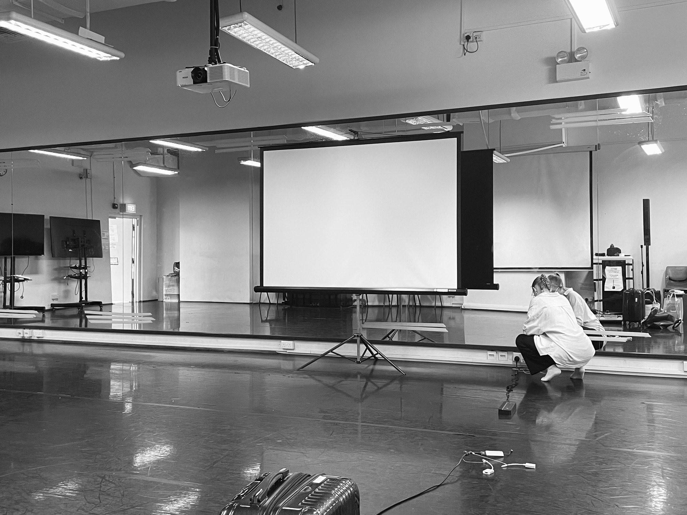
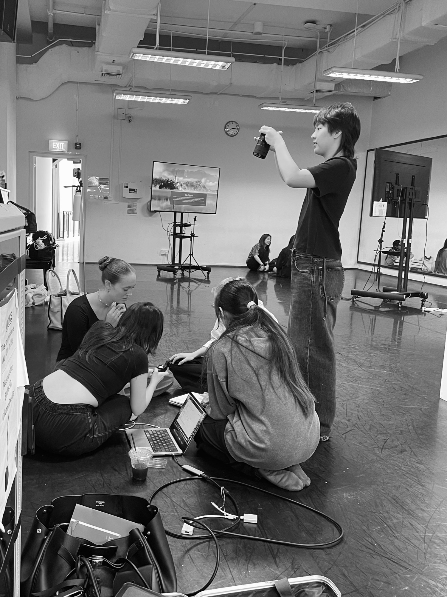
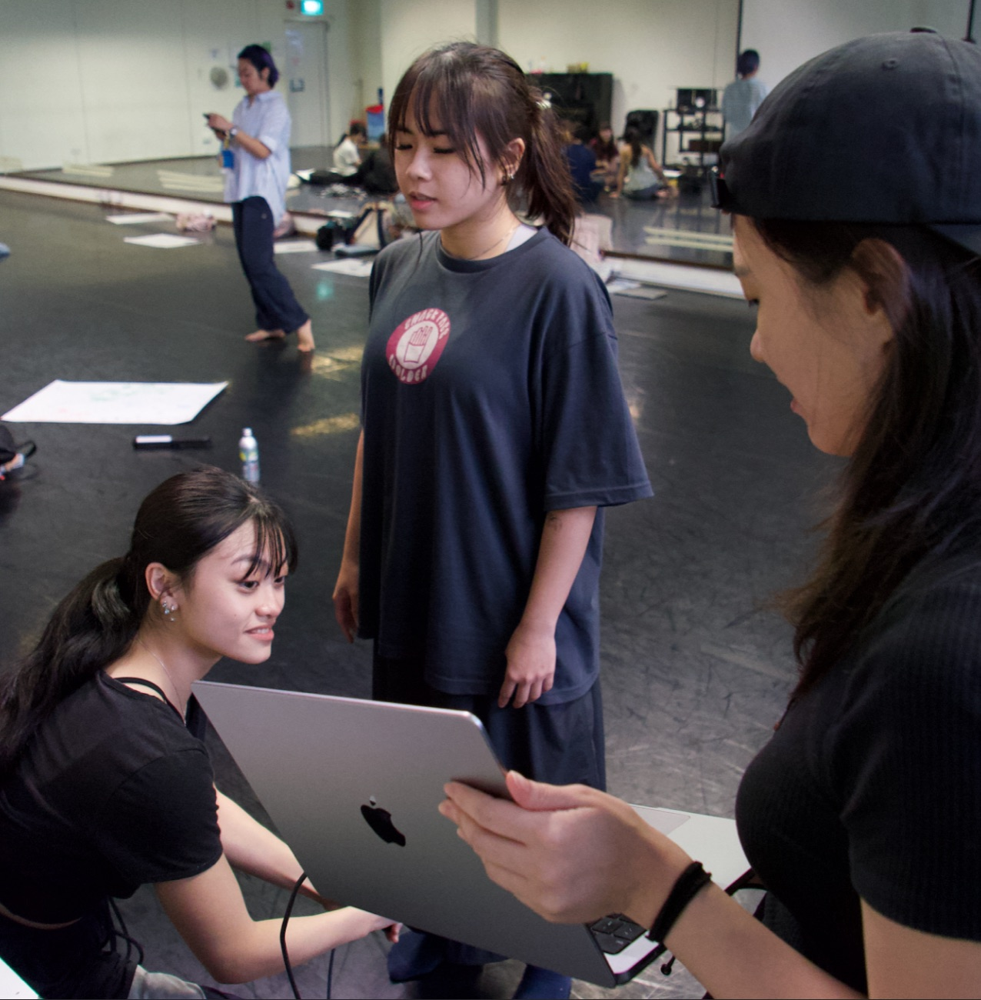
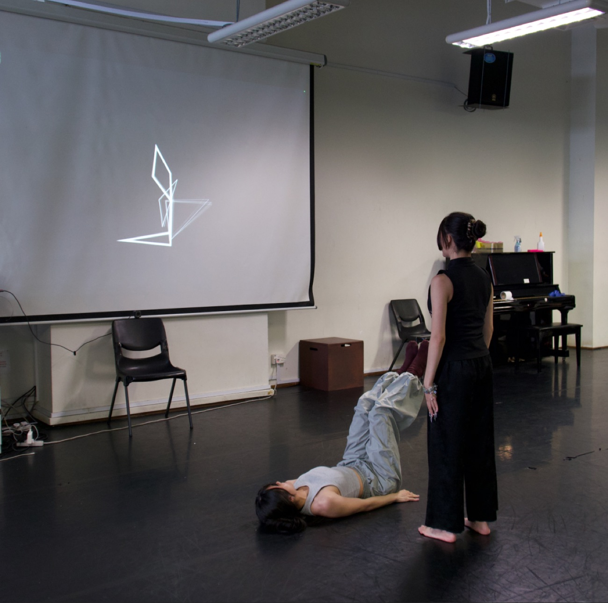
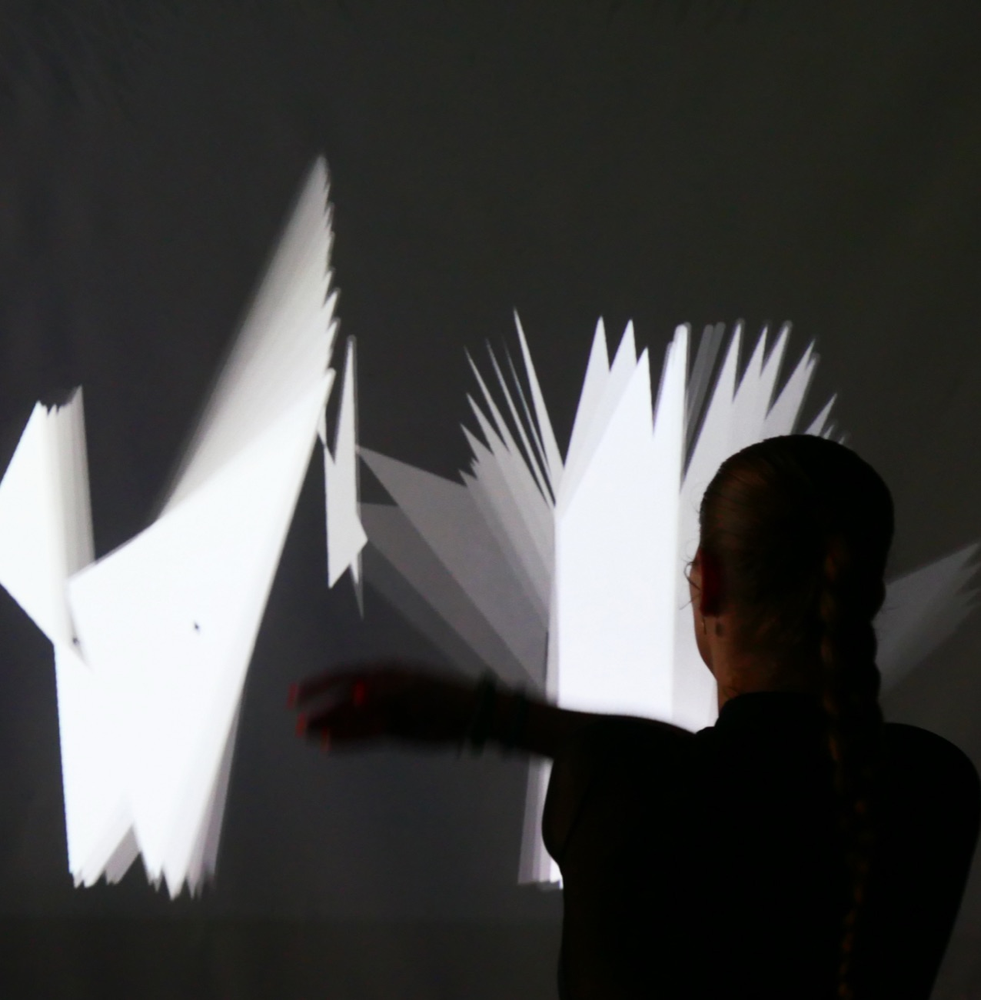
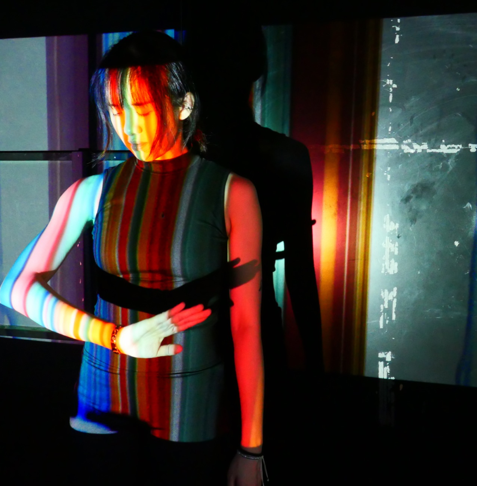
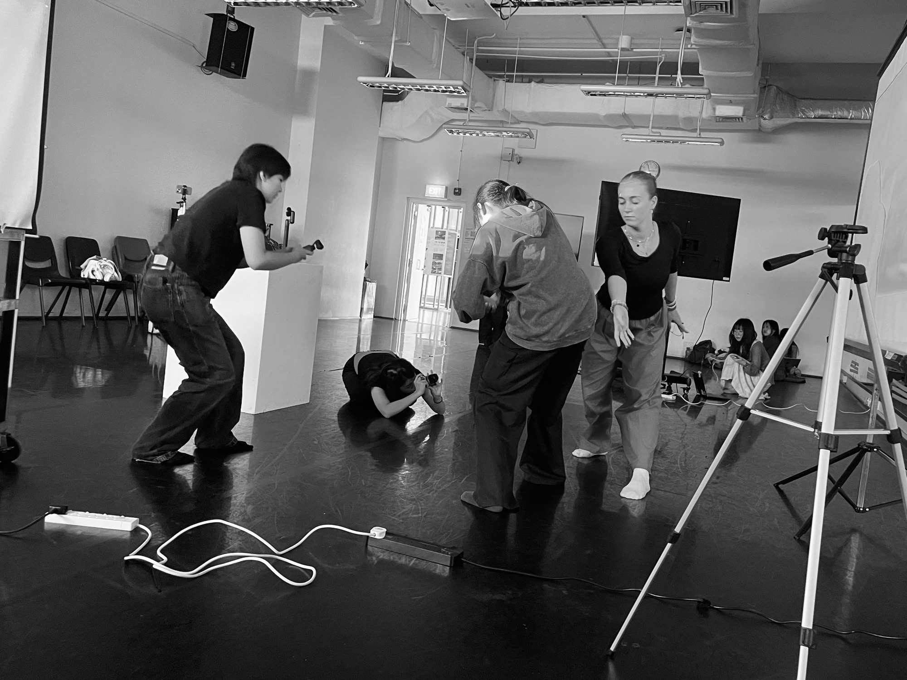
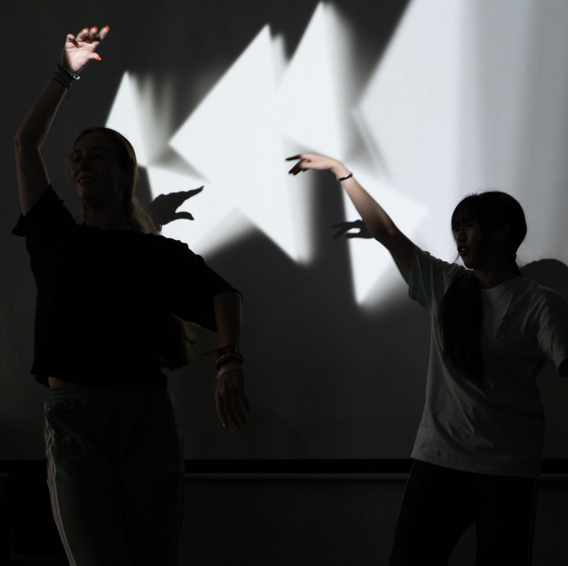
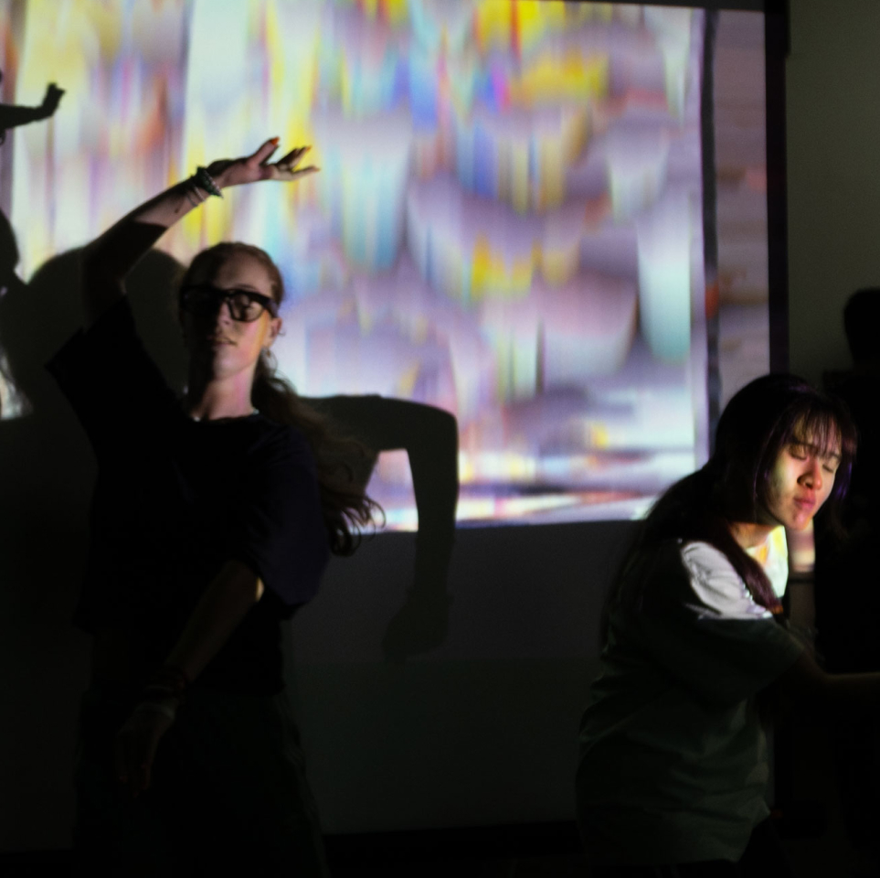

Returning to Light
A group project in p5.js: reading dancers’ bodies in code, and turning movement into light.
Returning to Light is about reclaiming yourself from what you carry: an image shaped by others, a weight from before, a self you never agreed to. The piece is about letting it go — finding, forgiving, accepting. The colour was always within.
We started by sketching with dancers’ movements, each sketch reading the same body in a different way. Then we mapped the body in code: wrist, shoulder, ankle — every tracked point a decision about what counts. Last came the spatial and visual narrative: two sketches, two dancers, two sides, and what holds between them. A conversation between things that remain different.









Photographs and video by the Returning to Light team. All rights reserved.